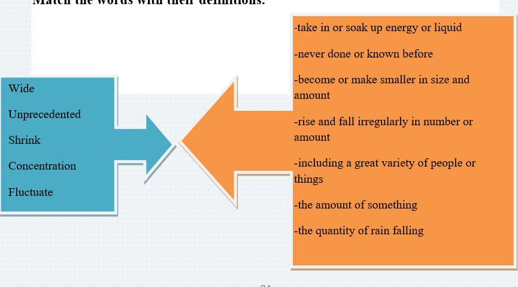
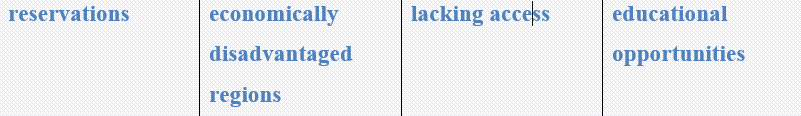
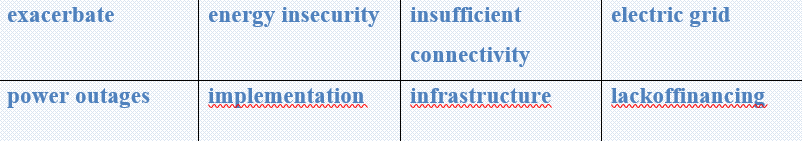

Widespread improvements in the quality of life of many of the world’s populations have gone hand-in-hand with increased demands on natural resources. The planet is struggling to keep up. Increases in the average global temperature, and the frequency of extreme weather events are transforming ecosystems around the world and threatening entire species of plants and animals. Forests are drying up because there is less rainfall and thus more fires, and the glaciers of both the North and South Poles are shrinking.
Climate is not the same as weather, but the two phenomena are closely related. While weather refers to short-term conditions that can change quickly, climate determines the long-term character of a given place, for instance, whether it is temperate or tropical.
Planet earth as a greenhouse
Solar energy in the form of radiation reaches the earth, where two thirds of it is absorbed by the planet’s surface. The rest is reflected back into the atmosphere where greenhouse gases operate. These gases reflect the energy back to earth where it again converts to heat – this process keeps the planet habitable. Thisphenomenonis called the greenhouse effect. Naturally, with the increasing amount of greenhouse gases in the atmosphere, this effect intensifies, leading to global temperature rise. Excessive temperature rise due to human activity is called global warming.
Burning fossil fuels
For millions of years, the concentration of greenhouse gases in the atmosphere fluctuated only slightly; natural processes removed as many greenhouse gases from the atmosphere as were released. Problems emerged as we began to extract and burn fossil fuels on a large scale, thus releasing unprecedented amounts of CO2 into the atmosphere. The concentration of CO2 has increased by almost 50 percent since the Industrial Revolution.
Task 1 Reading
Read the text and write the statements are true or false.
🔹 Because of increases in average global temperature, extreme weather events are transforming ecosystems.
🔹 Forests are dying up because there is much rainfall.
🔹 Glaciers of both the North and South poles are widening.
🔹 Climate and weather are different in many ways.
🔹 Weather refers to longer-term conditions.
🔹 2/3 of solar energy is absorbed by the planet’s surface.
🔹 For millions of years, the concentration of greenhouse gases in the atmosphere fluctuated considerably.
🔹 The concentration of CO2 has increased by almost half percent since the Industrial Revolution.
Task 2 Vocabulary
Match the words with their definitions.

Task 3 Speaking
Work with a partner and add some ideas to the columns below.
What do you think of when you hear the expression "climate change"
In what ways have we tried to slow down climate change?
Greenhouse gases
Reducing our water consuption
Ozone layer
🔹
🔹
🔹
🔹
🔹
🔹
🔹
1.give-gave-given
6.speak-spoke-spoken
2.sing-sang-sung
7.draw-drew-drawn
3.begin-began-begun
8.write-wrote-written
4.drink-drank-drunk
9.see-saw-seen
5.eat-ate-eaten
10.forget-forgot-forgotten
Task 5 Writing
✔️ Learn the given lexical units.
✔️ Work in groups and explain the meanings of the given lexical units.
✔️ Try to use them in sentences.


Read the case and give some solutions
Native American reservations are among the most economically disadvantaged regions in the United States; lacking access to economic and educational opportunities that are exacerbated by “energy insecurity” due to insufficient connectivity to the electric grid and power outages. Local renewable energy sources such as wind, solar, and biomass offer energy alternatives but their implementation encounters barriers such as lack of financing, infrastructure, and expertise, as well as divergent attitudes among tribal leaders.
What is the problem?
What does “energy insecurity” mean?
What are other energy alternatives for Native Americans?
What kind of barriers are there for Native American reservations?